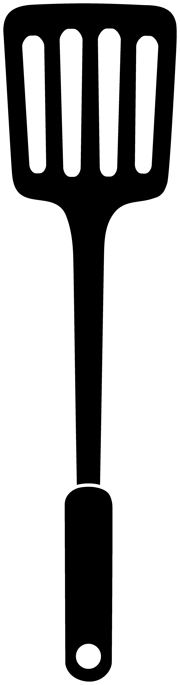

04/09/08: Spatulas
Spatulas are usually used to scrape within the contours of a mixing bowl or to level off the top of a dry mixing cup. It is a tool with two flat edges on a flexible blade. A spatula is usually short and about 8 inches long.
04/08/08: Cookle Monster Cupcakes
 Using a small amount of butter cream ‘glue’ a brown mini onto the white chocolate melt to make the eye.
Fill your ziplock bag with blue butter cream and then around one corner make lots of holes with a skewer. Generously cover you cupcake with blue swirls of buttercream.
Using a small amount of butter cream ‘glue’ a brown mini onto the white chocolate melt to make the eye.
Fill your ziplock bag with blue butter cream and then around one corner make lots of holes with a skewer. Generously cover you cupcake with blue swirls of buttercream.